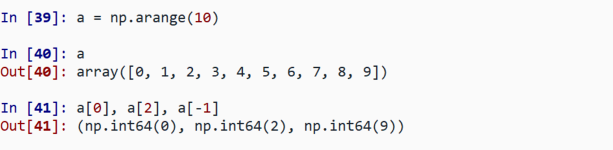
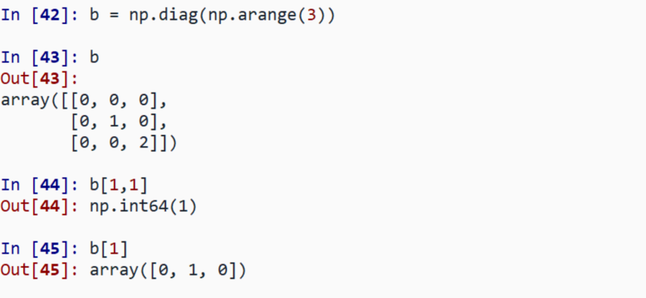
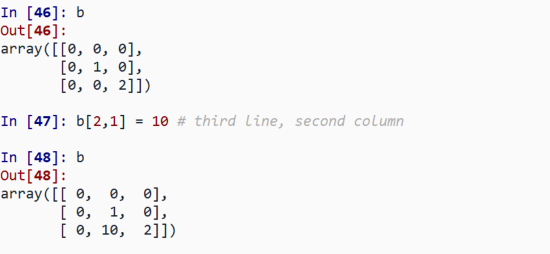
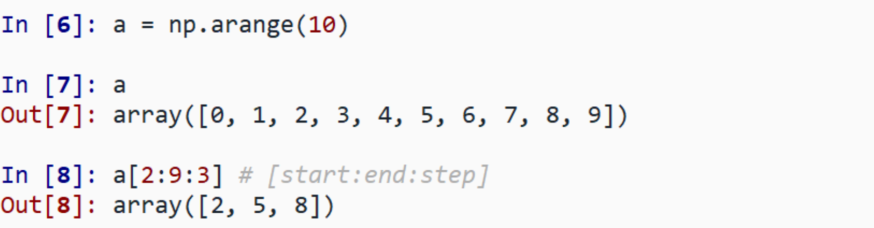
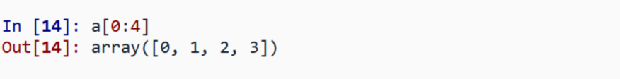
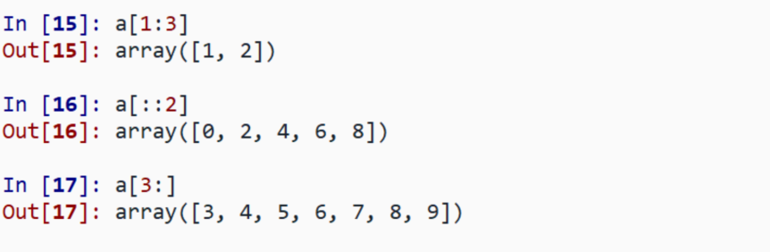
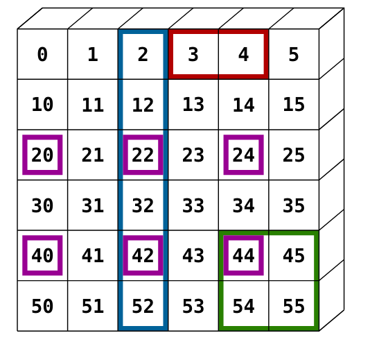

The items of a NumPy array can be accessed
1-D:

2-D:

Note: In 2-D, the first dimension corresponds to rows, the second to columns
The items of a NumPy array can be assigned to a new value

Slicing is accessing a range of values of an array:

Last index is not included:

All three slice components are not required, by default:
[start:end:step] \(\rightarrow\) [0:-1:1]

Exercise: Slicing a 2-D array
Define the array, then slice the depicted regions

We will continue next week.